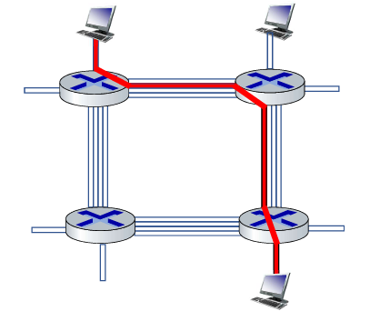

أعضاء الفريق
قاسم بطراوي - 1220204 - طالب هندسة حاسوب
المشاريع
- معالج متعدد المراحل - معمارية الجاسوب
- موقع الخطوط الجوية الفلسطينية - قواعد البيانات
- معالج متعدد الدورات - الأنظمة الرقمية المتقدمة
- معالج دورة واحدة - تنظيم الحاسوب
الهوايات والمهارات
- البرمجة
- القيادة
- العمل الجماعي

تليد حمادنه - 1220006 - طالب هندسة حاسوب
المشاريع
- معالج متعدد المراحل - معمارية الجاسوب
- موقع الخطوط الجوية الفلسطينية - قواعد البيانات
- معالج متعدد الدورات - الأنظمة الرقمية المتقدمة
- معالج دورة واحدة - تنظيم الحاسوب
الهوايات والمهارات
- البرمجة
- القيادة
- العمل الجماعي
التحويل بالحزم مقابل التحويل الدائري
التحويل بالحزم والتحويل الدائري هما تقنيتان مختلفتان لإرسال البيانات عبر الشبكة. كل طريقة لها طريقتها الخاصة في التعامل مع نقل البيانات، ولكل منها مزايا وعيوب مختلفة.
التحويل بالحزم

في التحويل بالحزم، يتم تقسيم البيانات إلى حزم صغيرة ترسل بشكل مستقل عبر الشبكة. قد تسلك كل حزمة مسارًا مختلفًا بناءً على حالة الشبكة، وتعاد تجميعها عند الوصول إلى الوجهة. تستخدم هذه التقنية بشكل شائع في الإنترنت وشبكات البيانات الحديثة.
المزايا:
- قابلة للتوسع وفعالة من حيث التكلفة.
- استخدام فعّال لعرض النطاق الترددي.
- كفاءة عالية للشبكة.
العيوب:
- إمكانية فقدان الحزم.
- وجود حمل إضافي بسبب رؤوس الحزم.
التحويل الدائري
في التحويل الدائري، يتم إنشاء مسار اتصال بين المرسل والمستقبل قبل بدء نقل البيانات، ويظل هذا المسار نشطًا طوال فترة الاتصال. يُستخدم التحويل الدائري بشكل أساسي في شبكات الهواتف التقليدية.
المزايا:
- اتصال موثوق ومستقر.
- زمن تأخير منخفض.
- أداء بسيط ويمكن التنبؤ به.
العيوب:
- بنية تحتية مكلفة.
- المسار المحجوز يهدر إذا لم يكن هناك نقل بيانات.